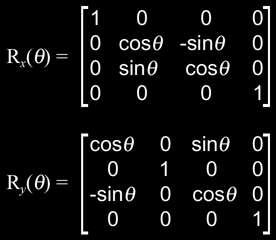

|
Moving The Player
Question submitted by (21 January 2002)

|
 |
|
 |
| |
i m a kid in games programming. though i use direct3D while desiging my
demo programms and thus have some knowledge of Matrices and their
manipulation methods available in Direct3D.
but now i want to develope a fps - game like programme in which movement
of camera in controlled by keyboard. though i have knowledge of force
feedback through directinput i m realy having problems while drawing my
projections on screen after user have changed the location of camera.
when user pressed forward key i need to handle that by drawing camera
velocity units + current position.
please help me how can i move, rotate, jump the camera according to keys
pressed?
|
|
 |
|
 |
 |
|
|
| |
If you've got even the most basic knowledge of matrices and how to use
them, then you've already won half the battle. Sometimes, it's just
tricky to pull the pieces together to get the end result you're looking
for.
Let's start by defining the exact behavior we want. You said you were
developing an FPS and that has a fairly popular interface which can be
coded fairly simply as long as we understand it. Our chief principle is
rotation .... rotation and movement .... movement and rotation .... Our
two principles are movement and rotation .... and looking up & down ....
Our three principles are movement, rotation and looking up & down ....
and an almost fanatical devotion to jumping .... Our four .... no ....
Amongst our principles .... are such elements as movement, rotation ....
I'll come in again. [exit stage left]
For those non-Python fans out there, let's state this a bit more
clearly: rotation, movement, looking up/down and for dessert, we'll have
just a smidgen of jumping.
We'll only need a few variables to pull this off. We'll keep track of
the player's location (3D point), his look up/down angle in radians (a
single float) and his turning rotation angle in radians (a single
float.) We will not, however be required to store the matrix because
we'll rebuild the matrix every frame.
At the beginning of every frame, we'll start with an identity matrix --
this will be our working matrix. At various steps along the way, we'll
apply the proper rotation and translation to this matrix based on the
user input. The end result will be a proper transform we can use for
player control of a single frame of animation.
As we enter a frame of animation, we'll gather the user input (via
mouse, for example) and translate that to degrees. There are a
lot of ways to do this, but for the sake of simplicity, we'll
simply scale the input; every 10 mouse ticks will be 1 degree of
rotation. Note that our rotation is positive when the mouse is moved in
one direction and negative when moved in the other direction. We'll then
translate this into radians and add it to our stored variable (his
turning rotation angle.)
From this, we'll build a matrix that contains rotation on the Y axis
only with the amount of rotation being that of our stored variable (if
you're not sure how to build a Y-specific matrix, I'll cover this
later.) This is our first rotation matrix. We'll concatenate it with our
working matrix (which is currently still just an identity matrix.)
Before we go any further, let's grab the player's movement vector. This
is the direction the player will move when the user asks him to. This
vector is quite simply the Z vector of our working matrix (think of a
3x3 matrix as three 3D vectors -- we want the Z vector.) Set this vector
aside, as we'll need it for movement later.
Our next step is to apply the look up/down. This works just like the
rotation; we gather the input, translate it into a positive or negative
look up/down angle, convert it to radians and add it to the stored
variable. Our previous rotation is not limited (we can continuously turn
to the left or right until our mouse falls apart), but this is not the
case for look up/down (we're not allowed to tilt upward or downward,
further than straight up or straight down.) So we'll need to take our
final result and clamp it. We'll be clamping it between -(PI/2) and
+(PI/2). This will allow our player to look all the way straight up and
all the way straight down (but no further.)
From this, we build a new matrix that contains rotation on the X axis
only with the amount of rotation being that of our stored variable
(again, if you're not sure about how to do this, I'll cover it later.)
We can now concatenate this with our working matrix (which currently
holds our turning left/right rotation) and we'll end up with a matrix we
can use for proper player camera view angles.
Before I go on, it's important to note the order in which these two
rotations are performed - don't do them in reverse order, or your camera
might get lopsided.
It's time to deal with movement. Go get that vector that you set aside
(you know... the one that came out of the first matrix we calculated.)
Where did that come from? Why did we save a piece of a matrix and what's
it for? Well, with simple orthogonal matrices, the third column/row is a
vector that will point in the direction that you will be looking, if you
were to use that matrix as a camera rotation matrix. Therefore, this
vector points in the direction that we'll be facing after we've applied
our rotation. It's important to set this vector aside before we apply
the look up/down rotation, because otherwise, our direction vector may
point up or down as well -- which would be useful for a 'flying' mode,
but not the usual stuff.
Time for movement; I'll assume you've already got an idea of how you
want the user to specify movement and that you already know how far to
move the player (in world space) -- you just need to know how to apply
it. We'll start by applying that movement distance to the direction
vector (the one we yanked from the matrix). Simply set the length of the
matrix to the distance (if you're not familiar with how to do this, you
can cheat by simply normalizing the vector and then multiplying each
component in the vector by the world-space distance you want your player
to move.) This resulting vector is known as the velocity vector
-- it's the direction and distance to move the player in a single frame.
Applying this movement is trivial -- you simply add the velocity vector
to your player's current position (which we have conveniently stored in
a 3D point.)
I mentioned that I would cover those X-specific and Y-specific
rotations. Most texts will cover this clearly, but for reference, I'll
include them here:

Finally on our list is jumping. This is a different beast entirely. In
order to implement proper jumping, you need gravity. Gravity thus
implies collision detection (though not necessarily.) So rather than try
to cover it here, I'll defer you to some example source you can use to
look at an implementation of all of the stuff described here, and even
peek at how jumping and collision detection are done. You did ask for
source, didn't you? :)
It's the collision detection demo/source I released sometime last year.
You can find it here under the
link titled A demonstration of the enhanced Fluid Studios collision
detection algorithm. For the stuff pertaining directly to this
article, look in render.cpp and find the Render::animate() routine.
Before I let you go, I'd like to point out another Ask MidNight article
that covers a method for smooth user input filtering (available here) that also includes a running
demo and may add some insight into the stuff described in this article.
Response provided by Paul Nettle
|
|
|
|
|
This article was originally an entry in flipCode's Ask Midnight, a Question and Answer column with Paul Nettle that's no longer active.
|